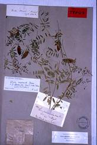
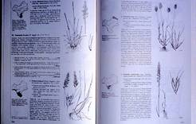
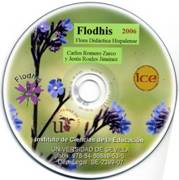
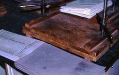
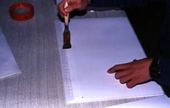
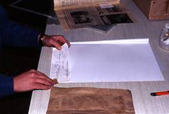
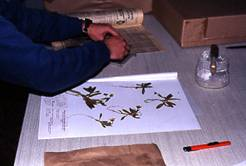
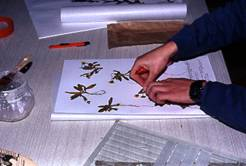

Prof.
Carlos Romero
Zarco, Universidad de
Sevilla
(jubilado en 2024)
La Taxonomía Vegetal es la parte de
la Botánica que
se encarga de la identificación, nomenclatura y clasificación
de las plantas.
Una de sus bases metodológicas es la técnica del herbario. Una
de las
exigencias del método científico es que las observaciones y
los resultados de
un investigador puedan ser repetidos y discutidos por otros.
La conservación de
las muestras vegetales en una institución es por tanto
imprescindible para la
validez y el progreso de dicha ciencia, que es la base sobre
la que se asientan
las restantes especialidades de la Botánica (fig. 1).
Sin embargo en su origen el herbario
fue una solución
técnica a un problema de tipo práctico: la necesidad de
conocer bien las
especies para su uso medicinal. Durante la Edad Media los
médicos usaban, en
lugar de los actuales "Vademecum",
unos
libros con ilustraciones de las plantas medicinales conocidas:
los
"Herbolarios" o "Herbarios", la mayoría de esas plantas
fueron usadas en la Grecia clásica y muchas provenían de
Oriente. Muchos
médicos con inquietudes científicas se dieron cuenta de que a
menudo las
ilustraciones no reflejaban bien la realidad, bien porque
representaban plantas
diferentes a las que crecían en su patria, bien porque de
tanto copiar las
ilustraciones se habían alterado tando los caracteres que ya
no se
correspondían con ninguna planta real. Es posible que algunos
desecaran
pequeños fragmentos de hojas o flores de las plantas que
conocían dentro de dichos
libros, para añadir un dato más real y poder reconocer mejor
la especie local
que ellos usaban... Así pudo nacer la técnica del herbario,
que al principio se
llamó "hortus siccus".
La invención "oficial" del herbario
se
atribuye a un tal Luca Ghini (1490-1556), profesor de Botánica
de la
Universidad de Bolonia —sí, sí... la Botánica es más antigua
que la Biología y se
enseñaba entonces a los médicos— Su método consistía en
desecar las plantas
bajo presión dentro de un pliego de papel, permitiendo así la
conservación de
las muestras para su estudio posterior. Su método se difundió
al resto de
Europa y adquirió importancia durante los siglos XVII y XVIII,
cuando los
descubrimientos geográficos produjeron una avalancha de nuevas
especies que era
necesario estudiar.

Fig. 1.- Ejemplar de herbario que utilizó
el botánico E.
Boissier para describir la especie Vicia
monardii en 1852 (herbario del Museo Botánico de
Ginebra)
Se crearon así los principales
herbarios institucionales,
asociados a jardines botánicos que gestionaban los recursos
vegetales de las
colonias.
En la actualidad existen centenares
de grandes
herbarios que atesoran un inmenso archivo vegetal que es el
resultado y a la
vez el testimonio científico de la investigación en Botánica.
Se han realizado
muchos progresos en los materiales, la conservación y la
documentación de los
herbarios, pero la técnica básica sigue siendo ese gesto tan
secillo de aquel
profesor del s. XVI: introducir una flor entre dos hojas de
papel.
La elaboración de un herbario de
carácter local tiene
los siguientes objetivos:
3.
Bibliografía
recomendada para las provincias de Cádiz, Córdoba, Huelva y
Sevilla
a.
Para novatos:
i.
C. Romero Zarco
& J. Roales (2007) Flodhis 2006: Flora Didáctica
Hispalense, Instituto de
Ciencias de la Educación, Universidad de Sevilla, en CD-Rom y
en Internet: http://www.institucional.us.es/flodhis
(fig. 3).
ii.
M. Luceño &
al. (2005) Flora silvestre y ornamental del Campus de la
Universidad Pablo de
Olavide.
c.
Para trabajos de investigación es
imprescindible
consultar Flora Iberica
(S.
Castroviejo & al., 1989-2005).
|
 |
 |
|
Fig. 2.-
Páginas de la Flora Vascular de Andalucía Occidental
(Valdés & al., 1987) |
Fig. 3.-
Portada del CD-Rom "Flodhis 2006" (C.Romero & J.
Roales) |
4.
Mapas (algunos no se pueden adquirir
sueltos o están
agotados):
i.
Mapas provinciales
de suelos. Sevilla. Instituto de Nacional de Investigaciones
Agrarias (1975)
ii.
Estudio
Agrobiológico de la provincia de Sevilla. Diputación
Provincial (1962).
Contiene mapa de suelos E. 1: 250.000
i.
Estudio
Agrobiológico de la provincia de Sevilla. Diputación
Provincial (1962).
Contiene mapa de vegetación E. 1: 250.000
ii.
Mapa de las
series de vegetación de España 1: 400.000,
de S. Rivas-Martínez, ICONA (1987). Ej.: hojas nº 26,
Cádiz
La mayoría de los
productos que se
utilizan en la conservación de un herbario son tóxicos y no
son recomendables
para un herbario de carácter local. Los insecticidas a base de
piretrinas de uso
doméstico son los
únicos recomendados para eliminar posibles plagas y siempre
siguiedo las
recomendaciones del fabricante. Los productos fungicidas son
tóxicos y caros,
por lo que es mejor utilizar medios físicos y preventivos: el
control de la
humedad es el más barato y eficaz. Se consigue controlando que
la desecación de
las plantas sea rápida y completa. Se pueden utilizar bolsitas
de gel de sílice
que se introducen en las
cajas o armarios y que se reutilizan secándolas periódicamente
en una estufa.
7.
Material de
oficina y mobiliario:
A)
Antecedentes
Es importante buscar y recopilar la
información
previa existente sobre la flora local, en primer lugar tomando como referencia
principal la flora regional
si existe, por ejemplo "Flora Vascular de Andalucía
Occidental" que
se menciona en el apartado III.3. Otras fuentes a investigar
son las tesis doctorales
y artículos publicados en revistas especializadas. Por
ejemplo, para las
sierras subbéticas sevillanas existe una tesis dosctoral leída
en la
Universidad de Sevilla por el prof. Emilio Ruiz de Clavijo
cuyos resultados
están publicados. Véase:
·
E. Ruiz de
Clavijo, B. Cabezudo & E. Domínguez (1984) Contribución al
estudio
florístico de las serranías subbéticas de la provincia de
Sevilla. Acta Botanica
Malacitana 9: 169-231.
Universidad de Málaga.
·
Así
como numerosos artículos sobre la flora
andaluza publicados principalmente en las revistas Lagascalia (Univ. de Sevilla) y Acta
Botanica Malacitana (Univ. de Málaga)
B) Factores
geográficos
Se recopilará la información
existente sobre geología
(mapas geológicos, etc.), suelos (mapas de suelos), cultivos
(estudios
agro-biológicos) etc., así como los datos climatológicos
correspondientes a las
estaciones más próximas a la zona de estudio, que pueden verse
en la Agencia Estatal de Meteorología (https://www.aemet.es/es/eltiempo/observacion)
C)
Legislación
Es muy importante conocer la
legislación vigente
sobre recolección de especies de flora silvestre y los
catálogos de especies
amenazadas. Para Andalucía se debe consultar la Ley 8/2003
de 28 de Octubre
de la flora y la fauna silvestres (BOJA de 12 de
Noviembre) y el LIbro Rojo
de la Flora Silvestre Amenazada de Andalucía, tomos 1 y 2 (G.
Blanca & al.,
1999-2000). Además hay que tener en cuenta que en los espacios
naturales
protegidos no se pueden recolectar muestras sin permiso
administrativo previo.
Las salidas al campo para realizar
la recolección
deben de distribuirse a los largo de todo el año, con una
frecuencia mayor en
los períodos de máxima floración. Para un área de muestreo que
se pueda
recorrer en un solo día, puede servir de referencia el
siguiente plan de
trabajo:
Siempre que sea posible se
recolectarán las plantas
en flor y con fruto, volviendo si fuera necesario al mismo
lugar donde se
recogió en flor para recolectar la planta con fruto.
Las plantas herbáceas de tamaño
pequeño o mediano
(hasta unos 60 cm), se arrancan a mano o se desenraízan con
ayuda de la azada y
se recolectan enteras.
De las plantas herbáceas de mayor
tamaño y de las
leñosas se desgaja o se corta una rama con flores y/o frutos.
Si fuera
necesario se toma otra rama con hojas. En el caso de plantas
con hojas basales
(generalmente grandes), se desprende una de dichas hojas para
prepararla en
pliego aparte.
Las plantas con bulbos o tubérculos
se deben
recolectar lo menos posible, para no dañar las poblaciones.
Cuando estos
órganos son pequeños (2-3 cm) se pueden cortar en rodajas
verticales para su
prensado. Cuando son grandes es mejor dejarlos "in situ". Se
excava
al pie y se extrae la planta completa con el órgano
perdurante. Luego se anotan
las características del bulbo o tubérculo (tipo, tamaño,
posibles coberturas de
hojas especiales, etc). A continuación se separa la parte
aérea y se vuelve a
enterrar el órgano subterráneo.
En todos los casos anteriores es
conveniente
recolectar más de una muestra para suplir posibles pérdidas o
para obtener
duplicados. También es conveniente, sobre todo al principio,
recolectar en una
bolsita un ramillete de flores para poderlas diseccionar en el
laboratorio,
manteniendo intactas las del pliego para el herbario.
Hay que poner atención a las
praderitas de pequeñas
herbáceas que crecen en terrenos arenosos húmedos que se secan
pronto, así como
a las plantas acuáticas, que a veces no florecen o tienen
flores casi
invisibles.
Las plantas recolectadas en un mismo
lugar se
introducen en la misma bolsa de plástico, con una etiqueta
escrita a lápiz
donde se anota la fecha y el lugar. Las plantas más pequeñas o
delicadas pueden
guardarse dentro de una bolsa más pequeña para que no se
pierdan entre las
grandes.
En cada punto de muestreo se anotará
en el cuaderno
de campo (fig. 4) la siguiente información:
Estos datos servirán para etiquetar
todas las plantas
de la misma bolsa.
Para cada especie que se recolecte
en el mismo lugar
se harán las siguientes anotaciones:
Cuando la salida al campo es de
corta duración (por
ejemplo una mañana), pueden prepararse las plantas por la
tarde en el
laboratorio, o guardar las bolsas anudadas en un frigorífico
(a unos 8 º C)
para preparar las plantas al día siguiente con la prensa
pesada (fig. 5).
Cuando la excursión dura un día completo o si el clima es muy
adverso
(demasiado calor), se preferible hacer una paradita en un
lugar adecuado y
preparar las plantas con la prensa de mano.
En ambos casos cada planta se coloca
en un pliego de
papel de periódico en cuya esquina inferior derecha se habrá
anotado
previamente el número de recolección. Se despliega la planta
de forma que
queden sus partes bien visibles (en especial las flores o
frutos), eliminando
las partes que sobresalgan o que abulten demasiado.
Luego se coloca el pliego sobre una
almohadilla
secante (varios pliegos de papel de periódico o de estraza
grapados) y se tapa
con otra, a la vez que se ejerce cierta presión con las manos
para acomodar la
planta. Habrá que tener especial cuidado con las plantas
espinosas, que conviene
someter a "tratamiento" previo aplastándola entre dos
almohadillas o
dos tablas en el suelo, mejor con ayuda de los pies que de las
manos. Los
bulbos, tubérculos y frutos voluminosos, en caso de que sea
necesaria su
recolección, se guardan aparte para secarlos en estufa o al
sol.
Las plantas acuáticas se preparan
siguiedo la misma
técnica que para el prensado de las algas. Véase el apartado
"Conservación
de las algas" en la página "Prácticas de Biología Marina":
https://crzarco.github.io/algas/
|
|
 |
|
Fig. 4.-
Cuaderno de campo |
Fig. 5.-
Prensa de tornillos |
Cuando tengamos el paquete formado
por pliegos y
almohadillas se mete en la prensa y se aprieta. No es
conveniente ejercer una
presión excesiva al principio, sólo la necesaria. En horas y
días sucesivos se
aumentará la presión a medida que las plantas pierdan agua y
volumen.
Al día siguiente hay que cambiar
todas las
almohadillas secantes por otras secas, dejando cada
planta dentro de su
pliego de campo. Lo mismo se repetirá diariamente al
menos durante tres o
cuatro días seguidos. Luego se puede cambiar cada dos días y
empezar a extraer
los pliegos que estén secos. Éstos se reunen en paquetes sin
apretar y se ponen
al sol (sin que le dé el sol directamente a las plantas) para
que acaben de
secarse. Cuando en la misma prensa se preparan plantas
delicadas junto con
otras más robustas, espinosas o suculentas, conviene
separarlas mediante un
panel de madera intermedio, para que la humedad, las espinas o
los bultos de
éstas últimas, no alteren la desecación de las primeras.
La conservación de los colores de
las flores mejora
mucho si se plancha cada pliego (sin usar el vapor) por encima
de la
almohadilla secante. Esto se puede hacer a partir del segundo
día de prensado.
Luego se vuelve a meter en la prensa.
El método recomendado para
colecciones particulares y
herbarios locales es la congelación a -18 º C durante tres
días del material
una vez bien seco y envuelto en bolsas de plástico
precintadas. Las
colecciones ya existentes en el herbario se someterán a
descontaminaciones
periódicas a ser posible todos los años. Cada tres días se
saca un paquete y se
mete el siguiente, conservando el mismo orden. Hay que tener
en cuenta que el
material seco y congelado es muy frágil y que hay que evitar a
toda costa la
humedad. Si el tiempo es muy húmedo es mejor esperar a otro
momento.
Muchas plantas traen ya dentro las
larvas que podrían
destruirlas mientras se secan o incluso después. El método
descrito garantiza
la destrucción de todos los insectos. Las bolas de naftalina
pueden ser útiles
para mantener alejados a los insectos. Los más peligrosos son
varios géneros de
coleópteros voladores ("coquitos") de las familias Anobidae y Dermestidae cuyas larvas destruyen las plantas
secas, y también los
"pececillos de plata" (Lepisma
saccharina) y las cucarachas, que se comen el papel y la
cola. Para evitar
los hongos lo más aconsejable es desecar las plantas muy bien
antes de
guardarlas y preservar los armarios de la humedad. Por ejemplo
calentando la
habitación en períodos húmedos o poniendo bolsitas de gel se
sílice en las
cajas (estas bolsitas hay que secarlas periódicamente). Es
importante, para
evitar contaminaciones, el no trabajar con plantas frecas o
sin descontaminar
en la misma habitación donde se guarda el herbario.
Con los datos de la libreta de campo
se elaboran las
etiquetas para cada planta. Una forma sencilla es hacer el
número suficiente de
etiquetas iguales para todas las plantas de una misma
colección, y luego añadir
a mano los datos concretos de cada ejemplar. Otra solución es
hacer las
etiquetas a partir de una base de datos cuando esté el
material identificado.
Los procesadores de texto modernos
tienen alguna
opción de "combinar correspondencia" o similar que se usa para
hacer
cartas personalizadas. Ese sistema puede utilizarse también
para imprimir
etiquetas extrayendo los datos de un fichero que puede ser un
texto delimitado
por tabuladores, una hoja de cálculo, etc.
En cualquier caso puede servir el
siguiente formato:
HERBARIO DEL IES
"Castillo de Cotes",
Montellano
Diplotaxis
catholica (L.) DC.
Fam. Crucíferas
Anual, fl. amarillas.
Vulgo:
"jaramago"; se usa como alimento de aves canoras
SEVILLA: Montellano, casco urbano, junto al Polideportivo
Herbazales ruderales en
suelo arcilloso; 210 m.s.m. TF7097
11.II.2004
Leg.: C.
Romero & al.
Det.:
C. Romero
0001/04
El montaje consiste en fijar el
ejemplar o ejemplares
en un soporte definitivo junto con su etiqueta. Hay diversos
métodos. El más
sencillo consiste en fijar las plantas mediante tiritas de
adhesivo de tela
(esparadrapo o similar), sobre una cartulina o papel grueso
definitivo.
En primer lugar se pega
la etiqueta en
el ángulo inferior derecho del pliego (fig. 7) Luego se
dispone la planta (o
las plantas) en una posición lo más natural posible (fig. 8) y
se sujetan por
aquellas partes que no importe tapar, nunca por la base de las
hojas o tocando
las flores, salvo que éstas sean muy grandes, sino por el
centro de los
entrenudos, pedicelos y pedúnculos (fig. 9).
|
 |
 |
|
Fig. 6.-
Pegado de papel fino sobre el borde trasero
izquierdo de la cartulina |
Fig. 7.-
Pegado de la etiqueta |
Cuando las plantas son muy pequeñas se montan una o dos
y el resto se
mete en un sobre de papel, que se fijará con cola cerca del
centro de la
cartulina. Las partes que se hayan desprendido o se puedan
desprender, como
flores sueltas, hojas o semillas, se meten también en un sobre
de papel que se
pegará preferentemente cerca del ángulo superior derecho del
pliego.
|
 |
 |
|
Fig. 8.-
Colocación de las plantas sobre la cartulina
definitiva |
Fig. 9.-
Fijación de las plantas mediante tiritas adhesivas |
El ejemplar así montado se guarda en
un pliego doble
de papel fino (camisa), en cuyo borde inferior se anotará a
lápiz la familia y
la especie. Otra posibilidad es pegar sobre el borde de la
cartulina una hoja
de papel fino y translúcido (fig. 6).
Los pliegos deben resguardarse del
polvo, de la
humedad, de la luz directa y de los insectos. Es conveniente
guardarlos en
cajas de cartón que cierren bien. Éstas a su vez se colocan en
una armario
metálico de cierre hermético. Los pliegos de especies de un
mismo género se
introducen en una camisa
(pliegos de
papel o cartulina algo más grandes y con solapa) con el nombre
del género y de
la familia. Si son muchos se abre otra camisa.
Hay tres criterios básicos para
clasificar y ordenar
el material de un herbario:
·
Taxonómico:
según su clasificación biológica; permite comparar especies y
géneros próximos
para identificar un ejemplar nuevo.
·
Geográfico: por
su procedencia; es un criterio importante en herbarios de
ámbito geográfico
mundial.
·
Alfabético, que
permite un acceso rápido.
Para un herbario de tipo personal o
local recomiendo:
1.
Criterio
taxonómico para ordenar los pliegos en especies, géneros,
familias y clases o
grandes grupos (Helechos, Gimnospermas, Monocotiledóneas y
Dicotiledóneas, en
ese orden).
2.
Criterio
alfabético para ordenar las familias dentro de cada clase, los
géneros dentro
de cada familia, y las especies dentro de cada género.
Para un herbario personal o local es
suficiente con
una base de datos sencilla, de un solo fichero, que contenga
un registro por
cada ejemplar del herbario (por cada número de recolección),
aunque el resto de
la información de la etiqueta sea algo repetitiva. Los datos
etnobotánicos
(nombre vulgar, usos etc., es mejor incluirlos en otra base de
datos en la que
habrá un solo registro por cada especie, o bien incluir un
campo con
referencias a documentos de texto. Para herbarios más grandes
es mejor un
sistema de varias bases de datos relacionadas mediante campos
de código
(fichero de taxones, fichero de localidades, etc.), lo que
hace más lenta la
consulta y recuperación de datos. Un ejemplo de estructura de
base de datos
sería la siguiente:
|
Nombre del
campo |
Tamaño |
Contenido
(ejemplo) |
|
Familia |
20
caracteres |
Cruciferae |
|
Género |
20
caracteres |
Diplotaxis |
|
Especie |
35
caracteres |
catholica
(L.) DC. |
|
Infraespecie |
35
caracteres |
[var.
o subsp. fulanita,
si acaso] |
|
Observaciones |
35
caracteres |
flores
amarillas |
|
Provincia |
7
caracteres |
SEVILLA |
|
Localidad |
50
caracteres |
Montellano,
casco urbano, junto al Polideportivo |
|
Hábitat |
35
caracteres |
Herbazales
nitrófilos |
|
Altitud |
4
cifras, sin decimales |
210 |
|
UTM
|
6
caracteres |
TF7097 |
|
Fecha |
De
tipo fecha |
11.02.2004 |
|
Legit
(recolectores) |
30
caracteres |
C.
Romero |
|
Determinavit |
15
caracteres |
C.
Romero |
|
Núm |
8
caracteres |
0001/04 |
|
Total |
309 bytes aprox. |
|
Los
usos de un herbario local pueden resumirse así:
1.
Como depositario o testimonio
del material de
trabajos de campo o de laboratorio.
2.
Para identificar plantas por
comparación.
3.
Para la consulta de investigadores
(personalmente o mediante préstamo del material).
4.
Para realizar intercambios
de material
(duplicados) con otros herbarios.
5.
Para obtener datos para trabajos
monográficos
sobre las plantas: catálogos, especies útiles (medicinales,
aromáticas,
comestibles, etc.), etnobotánica (usos, nombres vulgares,
curiosidades).
6.
Para obtener informes sobre
la presencia en la
localidad de determinadas especies, por ejemplo especies
raras, vulnerables o
en peligro de extinción. Esto es muy importante en los
informes de impacto
ambiental.
7.
Para completar el conocimiento
de la flora
comarcal, provincial, etc., publicando o comunicando en
congresos las novedades
que hubiera.
8.
Para realizar exposiciones
periódicas
temáticas del tipo:
·
"Flores de
la Sierra"
·
"Las flores
del mal" (plantas venenosas)
·
"La
despensa verde" (plantas comestibles)
·
"Flora
melitófila" (para la miel)
·
"La
vegetación mediterránea" (especies leñosas)
·
"Endemismos
béticos y bético-rifeños y su protección"
·
"Curiosidades
de las plantas
de... " (plantas
parásitas, golosinas naturales, semillas curiosas, orquídeas,
etc.)
·
"Las
plantas y el arte" (comparación de dibujos al carbón o a
plumilla con los
modelos naturales)
·
"Las
plantas y la fotografía"
·
"Flora
mitológica" (exposición de especies con
su correspondiente mitología en la tradición greco-latina:
mitología clásica
greco-romana, bíblica, etc.)
·
"Malas
hierbas y buenos agricultores: especies invasoras y su manejo
en agricultura
ecológica"
Con
frecuencia estas actividades escapan del ámbito exclusivo de
la Biología y la
Botánica y requieren la colaboración de otras materias:
Geografía, Historia,
Artes plásticas (dibujo, fotografía), Medicina (Farmacología),
Gastronomía,
Agronomía, Ecología/Ecologismo, Educación Física... Política
(¿por qué no?).
Todos
estos usos pueden realizarse también en colaboración con otros
herbarios de la
comarca o con entidades públicas (Delegaciones de Medio
Ambiente, Parques
Naturales, etc.) o privadas (asociaciones culturales o
ecologistas,
cooperativas agrícolas).
Bridson,
D. &
L. Forman (1998) The
Herbarium Handbook,
ed. 3. Royal Botanic Garden, Kew.
Colmeiro, M. (1847) Memoria sobre el
modo de hacer las
herborizaciones y los herbarios. Madrid. Facsímil de Librerías
Paris-Valencia.
Hall,
A.V. (1988)
Pest control in herbaria. Taxon 37:
885-907.
P.D.: Para saber
más sobre los
herbarios españoles:
Asociación de Herbarios
Íbero-macaronésicos: www.ahim.org
© Carlos Romero Zarco, Universidad
de Sevilla – 11 de
Febrero de 2004
Últimas actualizaciiones: 19 de
julio de 2006; 25 de octubre de 2026
[i] Obra de referencia para los alumnos de "Técnicas Experimentales en Botánica"
[ii] Los herbarios para la asignatura "Técnicas Experimentales en Botánica" no deben montarse, sólo se puede cambiar los pliegos de campo por otros limpios y se deben pegar ligeramente las etiquetas para que no se extravíen.